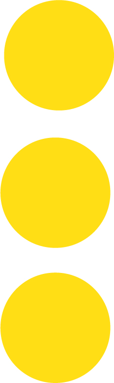

Designed by Adrian Frutiger and released by Deberny and Peignot in 1957, about the same time that Helvetica was released and in response to the same perceived need for a utilitarian, versatile sans serif workhorse.
Some feel that the modulated strokes give it a bit more character than Helvetica. It was designed as a full system of fonts with a wide range of weights, unlike Helvetica, which spawned variants in a rather disordered way (this disorder was addressed, much later, with the release of Helvetica Neue). Universe was the first typeface in which the weights were classified with a numerical system. Univers 55 is probably the base text font — the one most similar in weight to the standard version of Helvetica anyway — but a nice thing about Univers is that the lighter weights, especially 45, have even color and can be used to set continuous text. Univers has a somewhat smaller x-height than Helvetica, and the base font sets a little wider. (But both typefaces come in many flavors.) Although Univers doesn't mix well with other san serifs, it goes well with a range of serifed fonts — perhaps best with "transitional" fonts such as Baskerville. Robert Bringhurst advises mixing it with Frutigers eponymous font (rather than with his Meridien, which Bringhurst feels is not as close in structure). Until recently I hadn't used Univers much (I favored Avenir) but in the past couple of years I've used it for contemporary art series of exhibition catalogues for the Asian Art Museum. It's not a very hip or forward-looking choice — some would call it a cliche — but I've enjoyed getting to know this versatile typeface, which I had overlooked.
